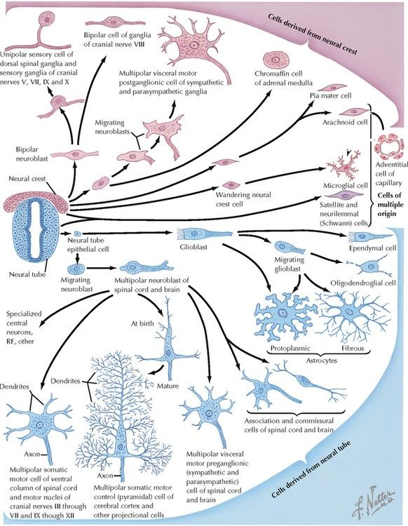
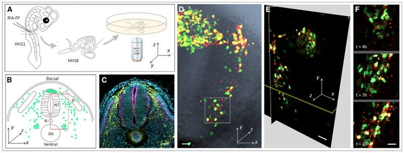

Qué cubre esta guía
Las citas remiten a la fuente y a su página o sección, por ejemplo Zeise p. 108, Purves p. 78 o apuntes, bloque III.
Fuera de alcance: la proliferación y la migración, que se desarrollan en la guía 03.
Lo esencial en 60 segundos
- El neuroectodermo, inducido por la notocorda, genera la placa neural y todo el sistema nervioso.
- La placa neural se pliega entre los días 18 y 22; el neuroporo posterior cierra entre los días 26 y 28.
- Sox2 y Nestina marcan células madre neurales; NRSE/REST silencia genes neuronales y GFAP y O4 marcan glía.
- Yamanaka reprogramó fibroblastos a pluripotencia con Sox2, Oct4, Klf4 y c-Myc.
- Las células iPS forman organoides de retina y cerebro anterior con varias clases celulares.
- La cresta neural aporta ganglios sensitivos, melanocitos, células de Schwann y esqueleto craneofacial.
- Las placodas craneales generan epitelio olfatorio, oído interno, cristalino y neuronas mecanosensoriales.
- La fortificación de la harina con folato en Chile redujo los defectos del tubo neural entre 40 % y 50 %.
La célula madre neural y sus marcadores
Una célula madre se define por dos propiedades simultáneas: se autorrenueva y, al diferenciarse terminalmente, puede originar todas las clases celulares del tejido. La progenitora no se autorrenueva de manera continua y suele producir una sola clase de descendencia, como la progenitora oligodendroglial que genera oligodendrocitos hasta agotar su capacidad mitótica. La célula madre neural cumple ambas condiciones y da otra célula madre neural o cualquiera de las neuronas, astrocitos y oligodendrocitos de los sistemas nerviosos central y periférico Purves p. 519. Deriva del ectodermo, donde queda comprometida al linaje neural, y de una sola pueden surgir un progenitor glial y uno neuronal por expresión génica diferencial apuntes, bloque I. Las células madre neurales pueden aislarse del embrión o generarse in vitro a partir de células ES, y en ambos casos se identifican por su capacidad de dar las tres clases principales de células neurales Purves p. 522.
La distinción entre célula madre embrionaria y célula madre somática ordena el resto del problema. La ES proviene de la masa celular interna del blastocisto, tiene autorrenovación infinita in vitro y puede dar los tres linajes más la línea germinal; la somática es específica de tejido y solo genera las clases celulares diploides de ese tejido. La neural pertenece a la segunda categoría, aunque comparte con la ES la capacidad de autorrenovarse, y la pluripotencia no es su propiedad Purves p. 519.
Su identidad se reconoce por un subconjunto de genes marcadores. Sox2, factor de transcripción bHLH, es uno de los marcadores fundamentales y coincide con uno de los cuatro factores de reprogramación. Nestina aparece más tarde, en progenitoras neurales posteriores, de modo que la secuencia Nanog, Nestina y βIII-tubulina describe el paso de la pluripotencia a la neurona. NRSE/REST es un represor que se une corriente arriba de múltiples genes neuronales e impide su transcripción, y se expresa más donde hay células madre para tejidos no neuronales y menos donde hay neuronas. En la célula diferenciada, GFAP identifica al astrocito y O4 al oligodendrocito Purves p. 522. La diferenciación de las células madre neurales en neuronas y glía está regulada por subconjuntos de señales secretadas y por dominios de señalización de proteínas de superficie en las células vecinas, de modo que el destino depende también del entorno inmediato Purves p. 522.
| Marcador | Célula o estado | Lectura |
|---|---|---|
| Sox2 | Célula madre neural | Factor de transcripción bHLH y factor de reprogramación |
| Nestina | Progenitora neural posterior | Aparece después de Sox2 en la ruta |
| NRSE/REST | Célula no neuronal | Represor de genes neuronales |
| βIII-tubulina | Neurona | Marca la identidad neuronal |
| GFAP | Astrocito | Proteína glial fibrilar |
| O4 | Oligodendrocito | Marcador de superficie |
Fuente: Purves p. 522.
Reconocer una neurona en cultivo exige morfología, electrofisiología y un medio adecuado. La morfología aporta soma, axón y dendritas; la electrofisiología confirma que la célula responde a la estimulación con un potencial de acción incipiente en el axón, las dendritas o el soma; y el cultivo necesita factores de crecimiento, pH, oxígeno y nutrición controlados. La sinapsis que se forma in vitro no alcanza la misma fuerza que in vivo, por lo que la morfología típica no basta para equiparar el cultivo con el tejido intacto apuntes, bloque I.
La especificación no depende de una sola molécula, sino de combinaciones y concentraciones de factores de crecimiento en ventanas temporales precisas. La diferenciación ocurre por sincronía temporal de los genes que se activan en cada ventana, y una misma célula madre puede generar un progenitor glial y uno neuronal según la expresión diferencial que recibe apuntes, bloque I. La promesa terapéutica existe, pero no hay un uso clínicamente validado de células madre en el sistema nervioso humano; los dos peligros son garantizar la división controlada en tejido maduro e identificar las instrucciones que producen la clase celular deseada Purves p. 519. En animales, células ES con PDGF generaron oligodendrocitos mielinizantes y células ES con ácido retinoico maduraron en neuronas motoras Purves p. 520.
Reprogramar el destino: Yamanaka, iPS y organoides
El primer experimento que mostró que el núcleo somático conserva el genoma completo se hizo en la rana. Se extrajo el núcleo de una célula del epitelio intestinal y se inyectó en un ovocito irradiado con UV; de 750 intentos, cerca de 10 produjeron una rana adulta sana. El resultado probó que la diferenciación no borra las instrucciones genéticas y que el citoplasma del ovocito puede reprogramar un núcleo diploide, trabajo que recibió el Nobel de Fisiología o Medicina en 2012 Purves pp. 518-520. Martin Evans aisló después células de la masa celular interna del blastocisto de ratón y las propagó in vitro; con las instrucciones adecuadas se diferencian en todos los tipos somáticos y contribuyen a la línea germinal Purves p. 520. Otros grupos aislaron células ES humanas a partir de blastocistos descartados de procedimientos de fecundación in vitro, con gran controversia. Esa fuente explica por qué la reprogramación de células somáticas cambió el panorama: permite obtener células pluripotentes de un individuo adulto, incluidas las que portan mutaciones de una enfermedad congénita Purves p. 522.
Shinya Yamanaka buscó la combinación mínima capaz de revertir el camino. Partió de la pregunta de si un astrocito podía volver a su estado inicial y llegó a cuatro factores, Sox2, Oct4, Klf4 y c-Myc, que introducidos con retrovirus en fibroblastos producen células madre pluripotentes inducidas, o iPS. Estas se comportan como las ES: inyectadas en un blastocisto contribuyen a todos los tejidos del organismo quimérico, incluida la línea germinal. El mecanismo es una reprogramación del DNA, que cambia qué genes están activos y la conformación general del DNA Purves p. 521. Yamanaka no inventó un proceso: emuló algo que ocurre en los primeros estadios del desarrollo, porque la pluripotencia es un estado natural recuperable de forma artificial apuntes, bloque I.
Cuando las condiciones in vitro favorecen la agregación, las células iPS o ES forman organoides, entidades multicelulares con varias clases celulares del tejido de interés. El protocolo de organoide cerebral pasa por células madre pluripotentes humanas, cuerpos embrioides, neuroectodermo, neuroepitelio expandido y tejido cerebral, con hitos en los días 0, 6, 11 y 15; en el día 15 se añade ácido retinoico en un biorreactor giratorio. Según las condiciones, el organoide se parece a retina, con fotorreceptores, células bipolares y ganglionares, o a cerebro anterior, con progenitoras y neuronas corticales Purves pp. 521-522.
Los organoides permiten obtener neuronas humanas a escala para experimentos imposibles con tejido de autopsia y modelar enfermedades genéticas a partir de células de la piel del paciente. Su utilidad es experimental, y la terapia celular sigue sin validación clínica en el sistema nervioso humano, con los peligros de división descontrolada y diferenciación incompleta todavía abiertos Purves pp. 519-522.
Gastrulación, notocorda y cierre del tubo
La gastrulación convierte una lámina de células en un cuerpo con ejes. Comienza como la invaginación local de un subconjunto de células y, al completarse, deja tres capas germinales: ectodermo externo, mesodermo medio y endodermo interno. La invaginación mesodérmica inicia el proceso, y la posición del mesodermo y el endodermo define la línea media y los ejes anterior-posterior, dorsal-ventral y medial-lateral, de los que depende la posición de todos los órganos, incluidas las estructuras faciales y los apéndices Purves p. 523. El embrión humano añade a esos tres ejes un eje rostral-caudal distintivo, porque la curvatura del sistema nervioso central hace que el extremo anterior se pliegue sobre sí mismo; esa geometría explica por qué las flexuras se describen como pliegues y no como simples divisiones lineales Purves p. 523. Las tres capas no son equivalentes: el ectodermo da cerebro y piel, el mesodermo da músculo, sangre, hueso y cartílago, y el endodermo da pulmón, intestino e hígado Purves p. 518.
La notocorda es el organizador mecánico de la línea media. Es un cilindro de células mesodérmicas que se condensa desde la cara medio-anterior hasta la posterior, se genera en el nodo primitivo o fosita y se alarga para formar el surco primitivo. Su posición define el eje de simetría y determina dónde se sitúa el sistema nervioso. Es transitoria, porque desaparece al completarse el desarrollo temprano, pero antes envía señales inductoras al ectodermo suprayacente junto con las células de la fosita Purves p. 523.
El ectodermo inmediatamente sobre la notocorda es el neuroectodermo, y de él deriva todo el sistema nervioso. La neurulación comienza cuando ese ectodermo se engrosa en un epitelio columnar, la placa neural. Los márgenes laterales, o placa alar, se pliegan hacia adentro; la porción medial, o placa basal, forma la región ventral del tubo. En la línea media ventral aparece la placa del suelo, sobre la notocorda, y en la dorsal la placa del techo. La placa del suelo especifica la posición y el destino de los precursores de la médula y del cerebro posterior, y la placa del techo facilita la diferenciación de los grupos dorsales Purves pp. 523-524.
El cierre sigue cuatro hitos. Hacia el día 18 se distinguen ectodermo, neuroectodermo, mesodermo, endodermo, notocorda y línea primitiva; hacia el día 20 aparece el surco neural, la placa se pliega y surgen la cresta neural y el mesodermo presomítico; hacia el día 22 el tubo está cerrado, con placa del techo dorsal y placa del suelo ventral, y aparecen las somitas; hacia el día 24 el tubo da la médula rudimentaria y el rombencéfalo, y la cresta origina los ganglios sensitivos Purves p. 524.
| Día | Estructura que aparece |
|---|---|
| 18 | Ectodermo, neuroectodermo, mesodermo, endodermo, notocorda y línea primitiva |
| 20 | Surco neural, cresta neural y mesodermo presomítico |
| 22 | Tubo neural cerrado, placa del techo, placa del suelo y somitas |
| 24 | Médula espinal rudimentaria, rombencéfalo y ganglios sensitivos |
Fuente: Purves p. 524.
El cierre no es un instante único. El neuroporo posterior se cierra entre los días 26 y 28, y su falla se asocia a espina bífida apuntes, bloque I. La placa del suelo, la placa del techo y la notocorda son transitorias y desaparecen casi por completo al completarse el desarrollo inicial, lo que explica por qué una lesión en esa ventana deja un defecto permanente aunque la estructura ya no exista en el adulto Purves p. 524. Shh de la placa del suelo cierra la línea media anterior, y Nogina de la placa del techo antagoniza las BMP que empujan al ectodermo hacia epidermis; juntas establecen la identidad ventral y dorsal de la médula Purves pp. 534-535.
Cresta neural y placodas
La cresta neural nace en los bordes laterales de la placa neural, donde esos bordes se unen para cerrar el tubo. Sus células abandonan el epitelio mediante una transición epitelio-mesenquimatosa, se vuelven migratorias y avanzan por una matriz de células mesenquimatosas poco compactas entre el tubo, la epidermis y las somitas. La transición depende de la posición, de las señales del tubo dorsal y de factores de transcripción que activan genes de movilidad Purves pp. 524-525. El borde se distingue por Pax3, nMyc, Msx, Snail 1/2 y Sox 9/10, con NCAM, N-cadherina, ephrinas y RhoB en la adhesión y el citoesqueleto Purves p. 525.
A lo largo del eje anterior-posterior se distinguen cuatro poblaciones. La craneal es la más anterior; la vagal se origina en la unión de la médula con el tronco encefálico; la del tronco surge de la mayor parte de la médula; la sacra ocupa la región más posterior, cerca de los esbozos de las extremidades posteriores Purves pp. 525-526. Las rutas de migración no son las mismas en todo el eje. En la cabeza, la cresta craneal migra inmediatamente por debajo de la epidermis; en el resto del cuerpo avanza por debajo de la epidermis y entre el tubo neural y las somitas, y las células que siguen la vía ventral y las que siguen la dorsolateral quedan expuestas a señales distintas. Esa diferencia de vecindad ayuda a explicar por qué una misma población origina derivados tan diversos Purves p. 525.
| Población | Origen | Derivados principales |
|---|---|---|
| Craneal | Extremo anterior | Ganglios sensoriales craneales, esqueleto craneofacial, tiroides, odontoblastos |
| Vagal | Unión de médula y tronco | Sistema nervioso entérico, ganglios parasimpáticos, músculo liso de aorta y grandes vasos |
| Tronco | Mayor parte de la médula | Ganglios de la raíz dorsal, ganglios simpáticos, células cromafines suprarrenales |
| Sacra | Región posterior | Neuronas entéricas, ganglios posteriores de la cadena simpática |
Fuente: Purves pp. 525-526.
Las cuatro comparten dos derivados que no siempre se recuerdan: todas originan células de Schwann, que mielinizan los axones periféricos, y melanocitos, las células productoras de pigmento de la epidermis. Esa mezcla de destinos neurales y no neurales explica por qué la cresta no es una estructura exclusivamente nerviosa Purves p. 526. Las neurocristopatías son su correlato clínico: surgen del emparejamiento defectuoso de la especificación, la migración o la diferenciación, y producen malformaciones craneofaciales y orofaríngeas, pérdidas sensoriales, malformaciones cardíacas, deficiencias de pigmento, complicaciones digestivas por pérdida del sistema nervioso entérico y tumores como el neuroblastoma. Definen la patología de los síndromes de DiGeorge o velocardiofacial, Down, Hirschsprung y Waardenburg Purves p. 526.
Las placodas craneales completan el sistema nervioso periférico de la cabeza. Son parches de ectodermo de las regiones craneales y faríngeas que permanecen como ectodermo neurogénico, a diferencia del vecino que se convierte en epidermis, y generan neuronas sensoriales periféricas y especializaciones para la transducción sensorial en la nariz, el oído y el ojo Purves p. 526. Aparecen como engrosamientos ectodérmicos durante el desarrollo temprano de la cabeza, y la cresta neural adyacente permanece como mesénquima laxo, sin organizarse en una capa epitelial Purves p. 527.
| Placoda | Derivado |
|---|---|
| Olfatoria | Epitelio olfatorio completo |
| Ótica | Vesícula ótica y órgano de Corti |
| Del cristalino | Cristalino y córnea, no la retina neural |
| Trigeminal y epibranquial | Neuronas mecanosensoriales de ganglios craneales |
Fuente: Purves pp. 526-527.
La relación entre placoda y cresta es inductiva y, en los ganglios craneales, mosaica. La placoda olfatoria es la excepción pura, porque el epitelio olfatorio deriva completamente de ella; en el cristalino, la ótica y la mayoría de las estructuras sensoriales craneales, la cresta aporta el mesénquima que sostiene la morfogénesis, y las neuronas definitivas mezclan progenitores de ambas fuentes. Esa mezcla explica por qué una misma estructura puede fallar por un defecto de cresta, de placoda o de la interacción entre ambas Purves p. 527.




Flexuras, rombómeros y el código de posición
Cerrado el tubo, el extremo anterior se dobla, se pliega y se estrecha. La primera forma es un asa de bastón, con dos flexuras iniciales. La cefálica queda cerca de la curva más pronunciada y su extremo se expande para formar el prosencéfalo; el mesencéfalo aparece como una protuberancia por encima de esa flexura; el rombencéfalo ocupa el tramo recto entre la cefálica y la cervical; y caudal a la cervical el tubo forma el precursor de la médula. Más tarde se añade la flexura pontina Purves pp. 527-528.
El prosencéfalo se divide en telencéfalo, que da corteza cerebral, hipocampo, ganglios basales y bulbo olfatorio, y diencéfalo, que da tálamo, hipotálamo y vesículas ópticas, de las que deriva la porción neural de la retina. El mesencéfalo da colículos superiores e inferiores y tegmento. El rombencéfalo se divide en metencéfalo, que da cerebelo y protuberancia, y mielencéfalo, que da bulbo raquídeo. La luz encerrada se convierte en los ventrículos laterales, el tercero, el acueducto cerebral y el cuarto Purves p. 528.
La especificación regional comienza con unidades repetitivas llamadas neurómeros. En el rombencéfalo se distinguen ocho rombómeros, r1 a r8, y cada uno o su combinación con el adyacente origina las neuronas motoras de un nervio craneal y la cresta de un ganglio sensorial. Los genes Hox se organizan en cuatro conjuntos, HoxA en el cromosoma 7, HoxB en el 17, HoxC en el 12 y HoxD en el 2, y su expresión sigue el orden anterior a posterior que refleja su posición 3' a 5' en el cromosoma, la colinealidad. El rombómero 4 se identifica por HoxB-1 y se relaciona con el ganglio trigémino, el ganglio facial y la vesícula ótica Purves p. 531. Los Hox no se extienden al mesencéfalo ni al prosencéfalo, donde operan DLX y PAX Purves pp. 529-531. La hipótesis de segmentación nació en Drosophila, donde los genes homeóticos bicoid, Krüppel, hairy y wingless se expresan en secuencia y dividen el embrión en segmentos; en vertebrados, los Hox conservan esa lógica, pero duplicada en cuatro conjuntos. Por eso el rombencéfalo es el mejor modelo para leer el código: sus ocho rombómeros tienen límites morfológicos visibles y una combinación propia de Hox, y esa combinación se mantiene en las células madre que generan cada núcleo motor craneal Purves pp. 529-531.
El organizador es la pequeña población de células madre embrionarias epiteliales equivalente a la fosita primitiva o al labio dorsal del blastoporo. Trasplantarlo a otra ubicación genera una notocorda secundaria y un segundo sistema nervioso en el ectodermo del huésped, con un renacuajo bicéfalo como resultado visible. Trasplantar una notocorda a una ubicación ectópica forma una placa del suelo ectópica y especifica neuronas motoras en lugar de sensoriales. La identidad neural depende, por tanto, de señales inductivas del entorno y no del destino intrínseco de la célula Purves p. 532.
Esas señales se organizan en cinco vías. El ácido retinoico, derivado de la vitamina A, activa receptores de retinoides y modula la transcripción según coactivadores y correpresores; impulsa proliferación y diferenciación y regula genes de otras señales, incluido Shh. FGF reúne 22 ligandos que activan receptores tirosina-cinasa y la cascada MAP cinasa-ras; FGF8 es clave para el cerebro anterior, el medio y las neuronas sensoriales craneales, y los FGF del mesodermo presomítico regulan la neurogénesis medular. BMP, con seis ligandos de la familia TGF-β, activa SMAD 1, 5 y 8 y empuja al ectodermo hacia epidermis y al mesodermo hacia hueso. Wnt, con 19 ligandos, tiene una vía canónica dependiente de β-catenina y TCF/LEF y una no canónica de polaridad celular; la primera regula Snail y la migración inicial de la cresta, la segunda alarga la placa y el tubo. Shh, a través de Patched y Smoothened, libera Gli1 hacia el núcleo y desplaza la acción represora de Gli3, y cumple tres funciones: cierre del tubo, identidad ventral de las neuronas motoras y modulación de la diferenciación posmitótica Purves pp. 533-535.
| Vía | Ligandos y receptor | Papel principal |
|---|---|---|
| Ácido retinoico | Retinol, retinal y ácido retinoico; receptores de retinoides | Proliferación, diferenciación y regulación de Shh |
| FGF | 22 ligandos; receptor tirosina-cinasa y MAP cinasa-ras | FGF8 en cerebro anterior y medio; neurogénesis medular |
| BMP | 6 ligandos; serina-cinasa, SMAD 1, 5 y 8 | Epidermis y hueso; especificación dorsal |
| Wnt | 19 ligandos; Frizzled, LRP5/6 y β-catenina | Cresta neural, proliferación y alargamiento del tubo |
| Shh | Shh; Patched, Smoothened y Gli | Cierre del tubo, neuronas motoras ventrales y diferenciación posmitótica |
Fuente: Purves pp. 533-535.
Para que el ectodermo se vuelva neural, las BMP deben ser antagonizadas. Nogina y Cordina se unen directamente a las BMP e impiden su unión a los receptores, y esa regulación negativa es el fundamento de la neuralización. La actividad combinada de ácido retinoico, FGF, BMP antagonizadas, Shh y Wnt especifica una expresión en mosaico de factores de transcripción a lo largo del neuroectodermo, la placa y el tubo Purves pp. 533-535. El resultado es un código de transcripción, la combinación de factores que establece la identidad de una clase neuronal. En la médula, Shh de la placa del suelo y Nogina de la placa del techo establecen la identidad ventral frente a la dorsal, que se traduce en neuronas motoras ventrales, interneuronas intermedias y neuronas sensoriales de relevo dorsales Purves pp. 535-536.
Cuando el desarrollo temprano falla
Las malformaciones congénitas del sistema nervioso suelen resultar de interferir con estos mecanismos antes de que se formen las sinapsis Purves p. 536. La causa puede ser una mutación, una enfermedad materna, un fármaco o un químico ambiental, y el efecto depende del momento y del tejido que recibe la señal alterada Purves p. 536. El ácido retinoico ilustra la doble cara de una misma molécula: en la década de 1930 se observó que tanto la deficiencia como el exceso de vitamina A producían malformaciones, y en la de 1980 la isotretinoína se asoció a más abortos y a niños malformados Purves p. 537. El mecanismo se aclaró al descubrirse los receptores de retinoide, porque el ácido retinoico es un factor de transcripción que activa genes específicos y regula genes de otras señales, incluido Shh Purves p. 537. La insuficiencia dietética materna de ácido fólico compromete la replicación del DNA, la división y la movilidad celular, y por esa vía interrumpe la formación del tubo neural Purves p. 537. El exceso de vitamina A, el alcohol, la talidomida y la alteración del metabolismo del colesterol, que compromete la señalización de Shh, completan la lista de teratógenos del desarrollo neural temprano Purves p. 537.
La holoprosencefalia es la malformación más común del cerebro anterior de los mamíferos y el ejemplo de un fallo de la separación hemisférica, no de cierre: la separación de los hemisferios falla de forma total o parcial, y el colapso de la línea media puede interrumpir las estructuras faciales, con falta de división del primordio ocular y ciclopía en las formas graves Purves p. 538. La incidencia es de 1/10.000 a 1/16.000 nacidos vivos, pero de 1/30 a 1/400 en el total de concepciones, porque muchas terminan en aborto o muerte fetal Purves p. 538. Se asocia a deleciones o mutaciones de SHH en el cromosoma 7, a PTC y a SMO, y la mayoría de las mutaciones de SHH son esporádicas Purves p. 538.
El meduloblastoma y el carcinoma de células basales muestran que la misma vía falla en tejidos distintos: el meduloblastoma es el tumor cerebral más común de la infancia, con 1/50.000 a 1/100.000 nacimientos y 60 % de supervivencia, y subvierte la neurogénesis cerebelosa, porque las células de Purkinje producen Shh como mitógeno para los precursores granulares y en el tumor hay señalización SHH alterada con Gli1 elevado Purves pp. 538-539. Cerca del 9 % de los casos tiene mutaciones de pérdida de función en PTC y otro 9 % en SUFU Purves p. 539. El carcinoma basocelular se asocia a PTC muy frecuente, SMO raro y SHH raro, y el síndrome de Gorlin, autosómico dominante por pérdida de función de PTC, combina carcinoma basocelular y meduloblastoma Purves p. 539.
La microcefalia por desnutrición no depende de un gen ni de un cierre fallido, sino del momento del crecimiento: Chile fue pionero en América Latina en erradicar la desnutrición infantil avanzada, el marasmo y el kwashiorkor, en la segunda mitad del siglo XX, y con ello cayeron las anomalías del neurodesarrollo por déficit nutricional apuntes, bloque I. A diferencia de las genéticas, en las que el recién nacido ya tiene la cabeza pequeña, la microcefalia adquirida aparece en lactantes que nacen con perímetro normal o levemente reducido y desarrollan el déficit durante los primeros dos años apuntes, bloque I. El mecanismo es la carencia proteico-calórica durante el brote de crecimiento cerebral, que abarca el último trimestre y los primeros dos años, y produce menos arborización dendrítica, menos glía, falla de mielinización y menos sinapsis apuntes, bloque I.
La espina bífida, en su forma de mielomeningocele, es la expresión más severa y frecuente de disrafismo espinal abierto apuntes, bloque I. El espectro de defectos del tubo neural no es único: el fallo del cierre anterior se asocia a anencefalia, y el del cierre posterior a espina bífida Purves p. 537. La holoprosencefalia, en cambio, es un fallo de la separación hemisférica y no de cierre, y por eso no se incluye entre los defectos del tubo neural Purves p. 538. Hay falta de fusión de los arcos vertebrales y protruye un saco quístico que, a diferencia del meningocele simple, contiene LCR, meninges y tejido nervioso displásico apuntes, bloque I. Su origen es una alteración de la neurulación primaria en la cuarta semana, por falla del cierre del neuroporo posterior entre los días 26 y 28 apuntes, bloque I.
La teoría del doble impacto explica por qué el daño progresa después del defecto inicial: el primer impacto es el cierre incompleto y el segundo es la exposición de la placoda al líquido amniótico, que destruye tejido por toxicidad química y microtrauma apuntes, bloque I. El déficit de ácido fólico es el factor de riesgo modificable más crítico, y a él se suman el ácido valproico y la carbamazepina, la diabetes pregestacional, la hipertermia materna y los polimorfismos de MTHFR apuntes, bloque I. La clínica depende del nivel: paraplejia o paraparesia flácida distal, con lumbosacro como nivel más habitual, vejiga neurogénica, incontinencia anal o constipación, pie equinovaro, luxación de caderas, escoliosis, Chiari tipo II entre el 80 % y el 90 % de los casos e hidrocefalia que con frecuencia requiere válvula de derivación ventriculoperitoneal apuntes, bloque I.
El folato actúa en la ventana que antecede al diagnóstico habitual del embarazo apuntes, bloque I. El cierre primario ocurre entre los días 21 y 28, de modo que la suplementación debe ser preconcepcional apuntes, bloque I. En Chile, la fortificación obligatoria de la harina de trigo con ácido fólico a 2,2 mg/kg se implementó en el año 2000 por el MINSAL y se asoció a una reducción de 40 % a 50 % de la incidencia de defectos del tubo neural, tanto anencefalia como espina bífida apuntes, bloque I.
Puntos de examen
- Gurdon: 10 de 750 intentos; núcleo somático en ovocito irradiado con UV; rana adulta; Nobel 2012 Purves pp. 518-520.
- Yamanaka: Sox2, Oct4, Klf4 y c-Myc; fibroblastos reprogramados a iPS con retrovirus Purves p. 521.
- Organoide cerebral: días 0, 6, 11 y 15; ácido retinoico en biorreactor al día 15 Purves p. 521.
- Marcadores: Sox2, Nestina, NRSE/REST, βIII-tubulina, GFAP y O4 Purves p. 522.
- Gastrulación: ectodermo, mesodermo y endodermo; la notocorda se genera en el nodo primitivo y es transitoria Purves p. 523.
- Neurulación: días 18, 20, 22 y 24, desde la línea primitiva hasta los ganglios sensitivos Purves p. 524.
- Neuroporo posterior: cierre entre los días 26 y 28; su falla produce espina bífida apuntes, bloque I.
- Cresta neural: craneal, vagal, tronco y sacra; las cuatro dan células de Schwann y melanocitos Purves pp. 525-526.
- Placodas: olfatoria, ótica, del cristalino, trigeminal y epibranquial Purves pp. 526-527.
- Flexuras: cefálica, cervical y pontina Purves pp. 527-528.
- Hox: cuatro conjuntos en los cromosomas 7, 17, 12 y 2; ocho rombómeros; HoxB-1 en r4 Purves pp. 529-531.
- Shh: cierre del tubo, neuronas motoras ventrales y diferenciación posmitótica; su mutación causa holoprosencefalia Purves pp. 534-538.
- Folato en Chile: 2,2 mg/kg desde 2000; reducción de 40 % a 50 % de los defectos del tubo neural apuntes, bloque I.
- Microcefalia por desnutrición: déficit postnatal en los primeros dos años; brote de crecimiento del último trimestre a los dos años apuntes, bloque I.
Límites del material
- El texto escaneado de las páginas 537 a 539 está parcialmente corrupto; las cifras citadas se leen, pero algunas frases completas no son reconstruibles.
- El bloque I registra una vía como WIT y una ventana de 14 a 15 días posfecundación; la sigla no se lee y no se puede afirmar que corresponda a Wnt.
- El bloque I no trae paginación, de modo que sus datos se citan por bloque y no por página.
- La proliferación y la migración neuronales quedan fuera de esta guía y corresponden a la guía 03.
- El material no detalla la cascada molecular del folato ni la cobertura actual del programa chileno; solo la reducción de 40 % a 50 %.
Figuras de la guía
Toca una miniatura para volver a la figura en su sección.